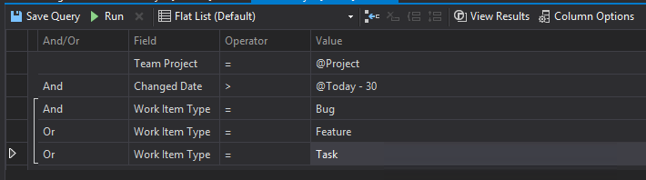

Creating release notes with Visual Studio and TFS
Here is a scenario for you. You’ve been slaving away at the next big release of your product, fixing reported bugs, adding features and cleaning up code. Lot’s of changes all over your code. Then comes that moment that you want to ship all that delicious code to your customers.
You prep a release build, zip it up and are pretty much done. Except for the release notes… What changed since the previous release?
Before you can start gathering your changes, I hope you tracked everything somewhere, preferably digitally and searchable. If not, then all you have is your check-ins, which is at least something. No check-in history either? Well then you are out of luck (and you need to upgrade your development process!)
So you did track every change properly? Good, lets get that list compiled (This example uses Team Foundation Server and Visual Studio 2013, but I assume other setups will have similar functionality). All you need is the date on which you released the previous version of your software.
At the time of writing it is the 21st of May, 2015. Lets say we released a month ago (30 days, to make this an easy example). Go to the Work Items section of the Team Explorer in Visual Studio and create a new query. In my example I query for Tasks, Bugs, and Features. To get only the items that we changed after the previous release, we set the Change Date to @Today - 30, this will give us all bugs, tasks, and features that were changed after we last released a new version our software.

You can of course create any query that matches your preference for this, but I found this way working very nicely. You can export the list to Excel and clean it up a bit before sticking it in a PDF and bundling it with your software.
Now that you have your release notes, hurry up and ship it! ;-)